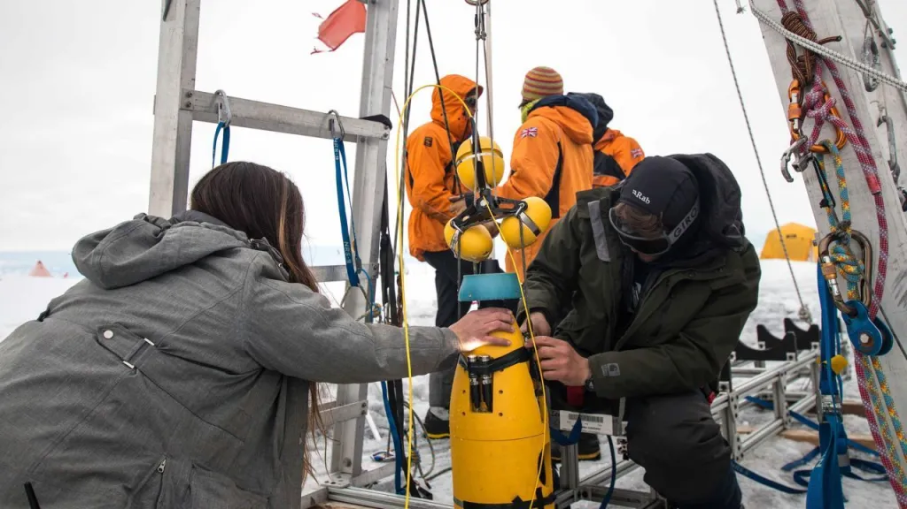

Ciência🧪
Engenheiros da NASA estão desenvolvendo sondas robóticas submersíveis para medir o derretimento das plataformas de gelo na Antártida
Em um avanço significativo para a pesquisa climática, cientistas da NASA desenvolveram uma nova frota de sondas robóticas submersíveis projetadas para medir o ritmo do derretimento das plataformas de gelo na Antártida. Este projeto, liderado pelo Laboratório de Propulsão a Jato da NASA, visa fornecer dados mais precisos sobre como o aquecimento das águas oceânicas está afetando as massas de gelo costeiras do continente antártico.
O protótipo dessas sondas foi testado com sucesso no Mar de Beaufort, no Ártico, e representa uma ferramenta vital para entender melhor o impacto das mudanças climáticas no aumento do nível do mar. A análise de dados coletados por essas sondas ajudará os cientistas a aprimorar modelos computadorizados que preveem futuras elevações do nível do mar, um aspecto crucial para preparar respostas a possíveis cenários de inundação costeira.
Estudos anteriores do laboratório revelaram que, desde 1997, as plataformas de gelo da Antártida perderam aproximadamente 12 trilhões de toneladas de massa, o dobro do que se estimava anteriormente. Se as plataformas de gelo do continente derretessem completamente, isso resultaria em um aumento de cerca de 60 metros no nível dos oceanos, segundo a NASA.
As plataformas de gelo são estruturas críticas no ecossistema polar, funcionando como barreiras que impedem o deslizamento de geleiras para o mar. No entanto, imagens de satélite indicam que o desprendimento de icebergs está ocorrendo a uma taxa que supera a capacidade natural de reposição dessas plataformas. Além disso, o aumento da temperatura dos oceanos está provocando a erosão das plataformas por baixo, um fenômeno que essas novas sondas estudarão com detalhes inéditos.
A iniciativa reflete o compromisso contínuo da comunidade científica em enfrentar os desafios impostos pelas mudanças climáticas e destaca a importância de tecnologias inovadoras na coleta de dados ambientais essenciais. Com a implementação dessas sondas, espera-se obter uma compreensão mais profunda dos processos que governam as interações entre o oceano e o gelo, fornecendo informações valiosas para a tomada de decisões relacionadas à proteção do nosso planeta.
Educação📚
Brasil se destacando cada vez mais na área astronômica
A dedicação e o esforço de uma jovem estudante brasileira foram reconhecidos internacionalmente na área da astronomia, um campo que desafia a curiosidade e a capacidade intelectual. Natália Vinhaes, uma aluna do ensino médio de 18 anos, conquistou uma medalha de bronze na Olimpíada Internacional de Astronomia e Astrofísica. Este feito notável foi alcançado através de um método de estudo pouco convencional para sua idade: a utilização de livros adotados no ensino superior.
A competição, que contou com a participação de mais de 300 estudantes de 53 países, foi realizada nesta semana em Vassouras e Barra do Piraí, no Rio de Janeiro. A preparação de Natália envolveu um mergulho profundo nos livros recomendados por outros competidores que já haviam participado de olimpíadas anteriores. Ela relata que o conteúdo aprendido no colégio é muito básico e insuficiente para enfrentar os desafios propostos pela olimpíada. A estudante, que sempre teve interesse pela física, percebeu que era necessário expandir seus conhecimentos além do currículo escolar tradicional.
O sucesso de Natália não é apenas uma vitória pessoal, mas também um exemplo inspirador para outros estudantes que aspiram a alcançar reconhecimento em suas áreas de interesse. A jovem destaca a importância das olimpíadas científicas como uma plataforma para conhecer pessoas do mundo inteiro com interesses semelhantes e para se sentir menos isolada em seus estudos especializados.
A Olimpíada Internacional de Astronomia e Astrofísica é uma das várias competições que estimulam o desenvolvimento acadêmico e a excelência entre jovens estudantes. No Brasil, a participação em olimpíadas científicas é incentivada como uma forma de enriquecer o currículo e descobrir afinidades com diferentes áreas do conhecimento. As inscrições para essas competições geralmente ocorrem online e são abertas a estudantes de todo o ensino fundamental e médio.
A história de Natália Vinhaes é um lembrete poderoso de que a paixão pelo conhecimento e a busca pela excelência podem abrir portas para oportunidades extraordinárias. Sua conquista na Olimpíada Internacional de Astronomia e Astrofísica é um marco que reforça o valor da educação e do esforço individual na realização de grandes feitos.
Entre a Lei e a Tecnologia: O Confronto do STF com X
Em uma decisão sem precedentes, o ministro do Supremo Tribunal Federal (STF), Alexandre de Moraes, emitiu um ultimato para que a plataforma X, anteriormente conhecida como Twitter e de propriedade do empresário Elon Musk, nomeasse um representante legal no Brasil. A medida surge após uma série de desafios legais e tensões entre a plataforma e o STF, relacionadas ao cumprimento de ordens judiciais brasileiras.
O contexto dessa decisão é uma longa batalha legal envolvendo a plataforma X e o STF, centrada na questão da liberdade de expressão e na regulamentação das redes sociais. Em abril de 2024, Musk usou a rede social para criticar o ministro Moraes e ameaçou não cumprir mais as ordens judiciais do STF. Como resultado, Moraes incluiu Musk como investigado no inquérito das milícias digitais, do qual é relator, e que investiga a disseminação de desinformação e ataques às instituições democráticas.
A situação escalou quando, em agosto, Musk anunciou o fechamento do escritório da X no Brasil e a demissão de cerca de 40 funcionários, em resposta a decisões judiciais que ele considerou arbitrárias. Isso levou a uma ordem de Moraes, baseada no Código Civil brasileiro, que exige que empresas estrangeiras tenham uma sede e um representante legal no país, para que a X nomeasse tal representante.
A decisão de Moraes foi publicada de forma inédita na própria plataforma da X, marcando a primeira vez que uma intimação do STF foi veiculada dessa maneira. Musk respondeu à intimação com uma postagem que ridicularizava o ministro, o que, segundo o STF, significou que ele oficialmente tomou ciência da intimação.
Diante da falta de cumprimento da ordem de nomear um representante legal e do bloqueio de contas de investigados acusados de afrontar a democracia brasileira, Moraes determinou a suspensão imediata das atividades da X no Brasil. Além disso, ordenou o bloqueio das contas da Starlink, outra empresa de Musk, para o pagamento de multas aplicadas à X, totalizando R$ 18,35 milhões.
Essa situação destaca a complexidade das interações entre as grandes plataformas de tecnologia e os sistemas legais nacionais, especialmente em um momento em que o mundo está cada vez mais atento ao poder e influência dessas empresas sobre a sociedade e a política. O caso também ressalta a importância de um diálogo construtivo entre as empresas de tecnologia e os governos para garantir que ambos os lados possam operar dentro de um quadro legal claro e justo.